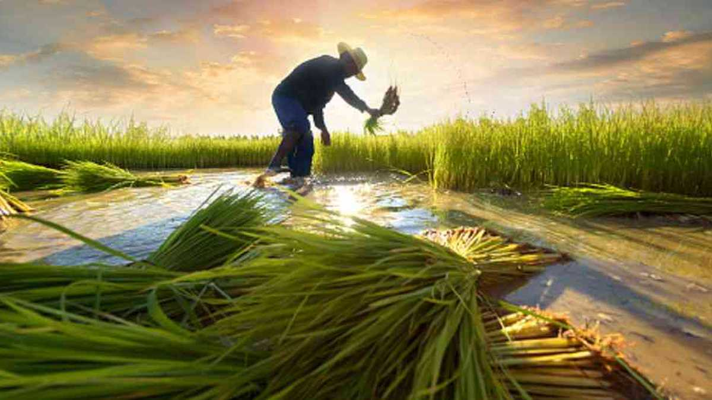

BIENVENIDO
Si lo que estás buscando es un pagina web potente y de fácil manejo en el sector de la administración de fincas, entonces nos has encontrado.Podemos ayudarte en la gestión de la contabilidad para su finca.

En Colombia, el sector agro es uno de los principales ejes que mueve el país, es por eso que en MWLC GROUP pensamos en ti y lo mejor para administrar tu finca. Y es que nuestro país, según la FAO (Organización de las Naciones Unidas para la Alimentación y la Agricultura), puede convertirse en una de las grandes despensas del mundo, pues es uno de los siete países en Latinoamérica con mayor potencial para el desarrollo de áreas cultivables: “Entre 223 países en los que se evaluó el potencial de expansión del área agrícola –sin afectar el área del bosque natural– esta nación ocupó el puesto 25, ya que de las 22 millones de hectáreas cultivables, solo están sembradas 4,8, sin incluir el potencial de la Altillanura, estimado en 3,5 millones de hectáreas”